Sodegaura, Chiba: things to do, food and stays
Sodegaura · Chiba
Sodegaura
Highlighted on the Chiba map.
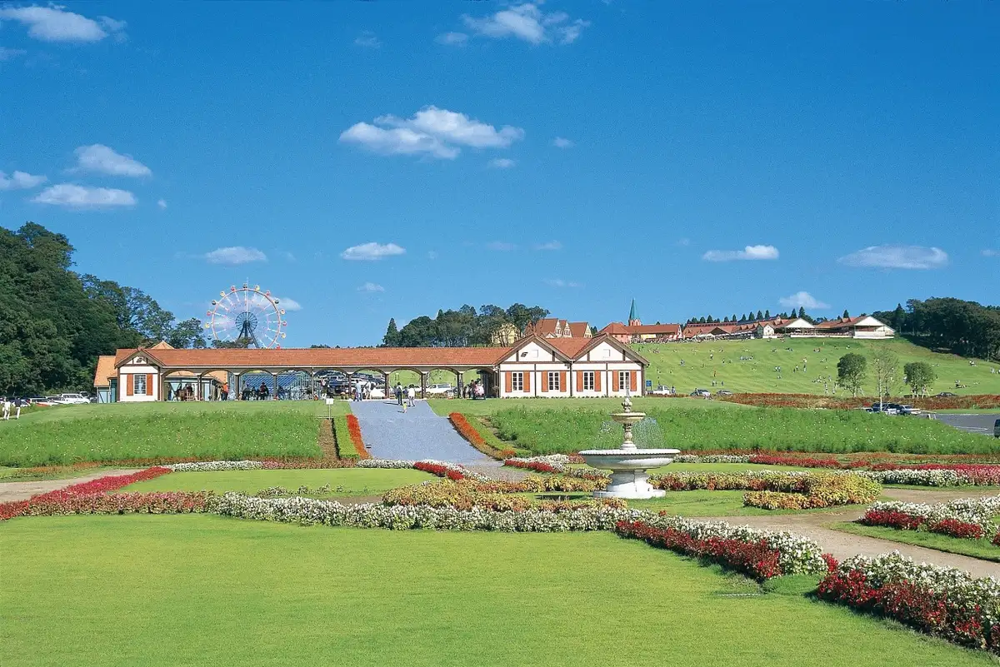
Stay
東横ＩＮＮ袖ケ浦駅北口

Toyoko INN Sode Ke Ura Eki Kitaguchi
Inn in Sodegauraekimae, Sodegaura with breakfast available.
ファミリーロッジ旅籠屋・袖ヶ浦店
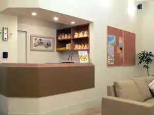
Famiri Lodge Hatago Ya Sodegaura
Mountain lodge in Imai, Sodegaura with breakfast available and family-friendly stays.
Tabist 浜戸屋旅館
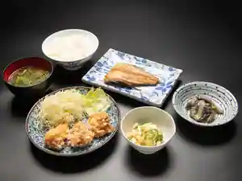
Tabist Hama Toya Ryokan
Ryokan inn in Kuranami, Sodegaura with long stays.
Dining
寿ラーメン
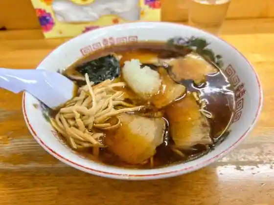
Hisashi Ramen
藤鮨
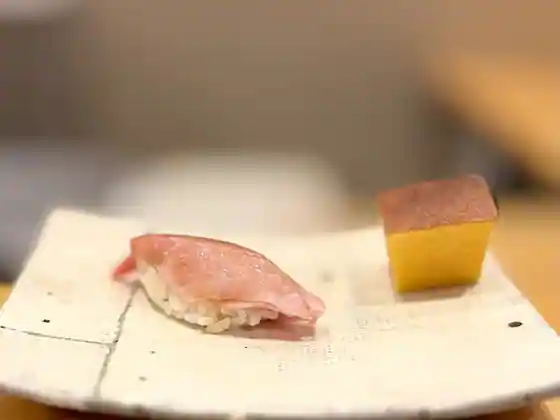
Fuji Sushi
のうえんカフェ
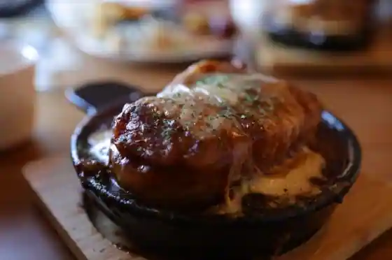
Noen Cafe
回転寿司やまと 袖ヶ浦駅前店

Kaitenzushi Yamato Sodegaura Ekimae
魚料理専門店 わかせい
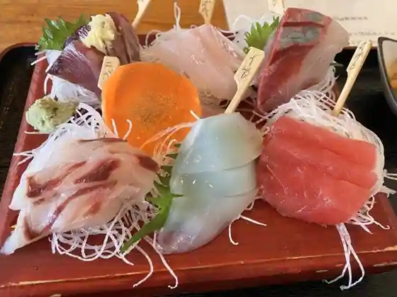
Sakanaryori Senmon Wakasei
花ふじ
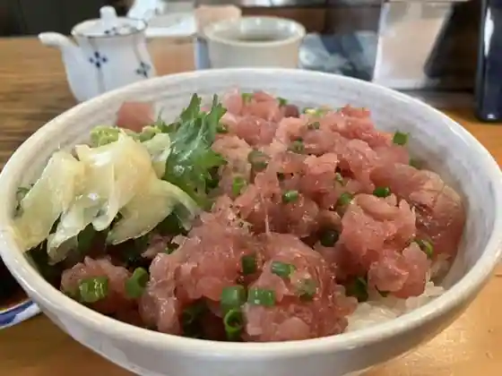
Hana Fuji
魚喜
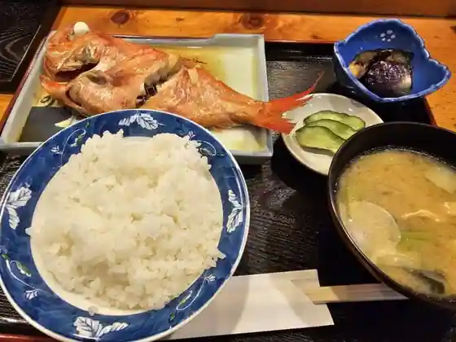
Sakana Ki
居酒屋食堂 なじみ
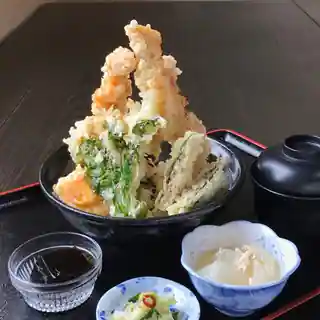
Izakaya Shokudo Najimi
ゆき
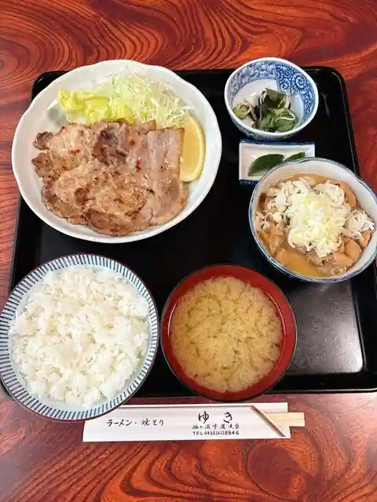
Yuki
ブレッド&コーヒー モーモーズ
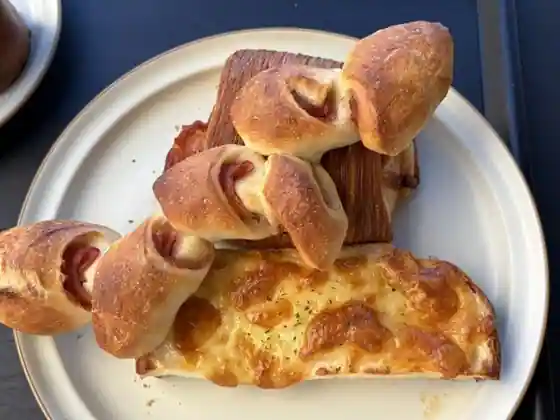
Bureddo & Coffee Momozu
カメリアヒルズカントリークラブ レストラン
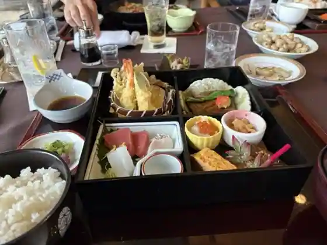
Kameriahiruzukantorikurabu Restaurant
亀悦
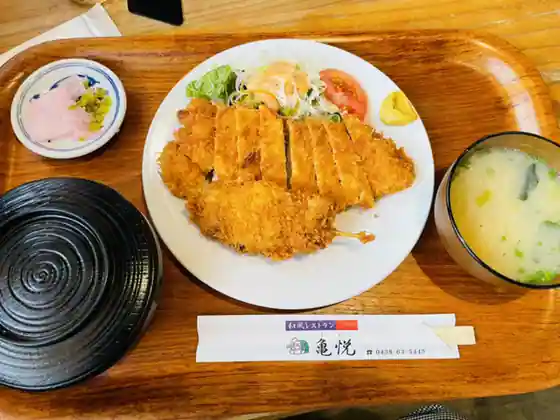
Kame Etsu
ドライブイン ときわ
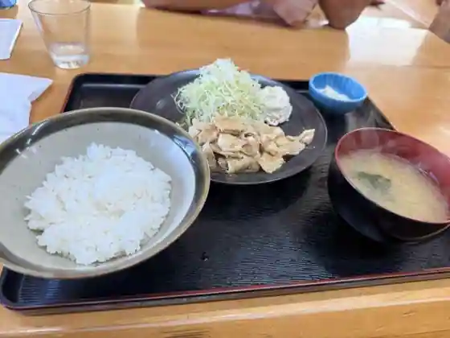
Doraibu Inn Tokiwa
ラーメン定度
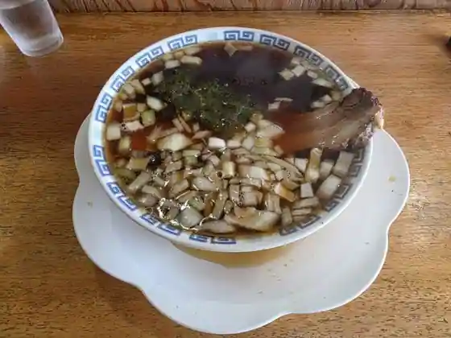
Ramen Teido
大衆中華ホサナ
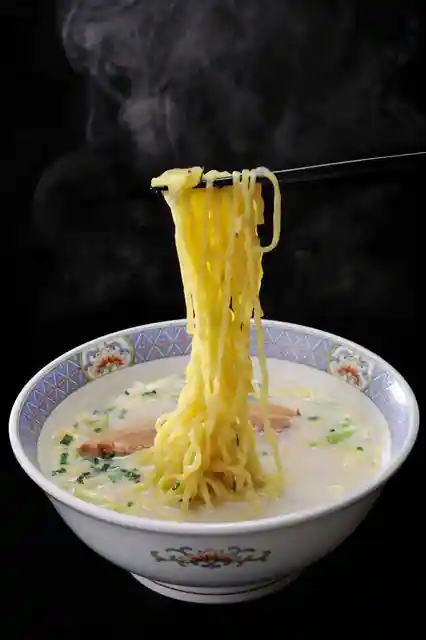
Taishu Chuka Hosana
幸寿司
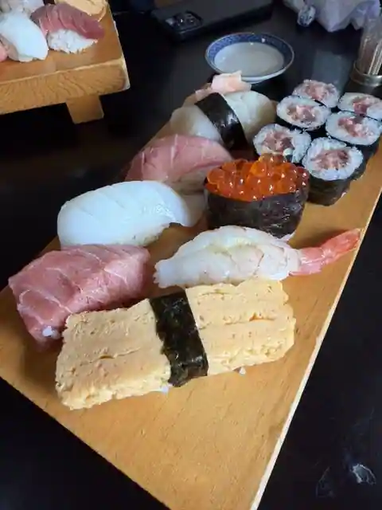
Yukitoshi Tsukasa
麺処霧笛
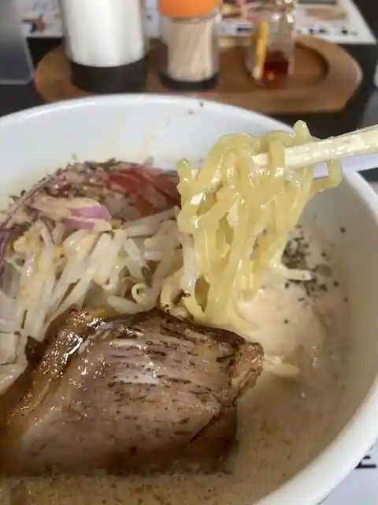
Men Tokoro Muteki
プララおばさんのパン工房
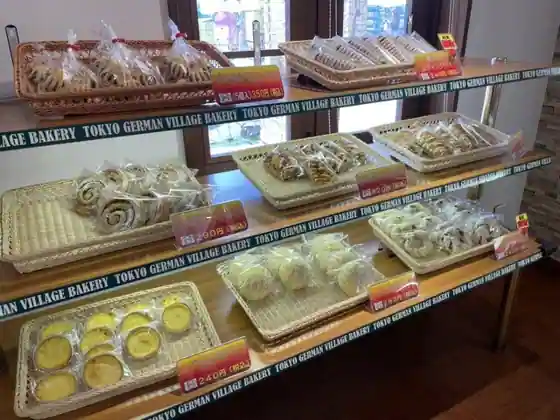
Purara Obasanno Bakery Kobo
遊歩
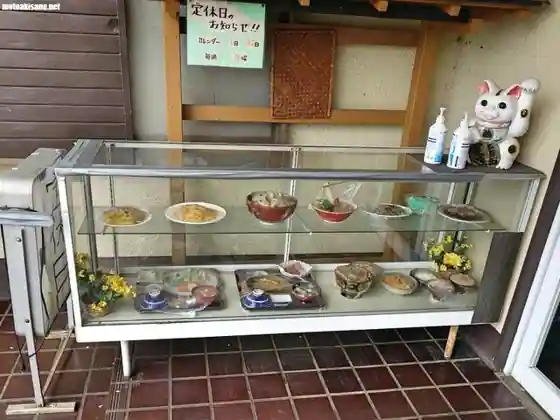
Yuho
らーめんとも
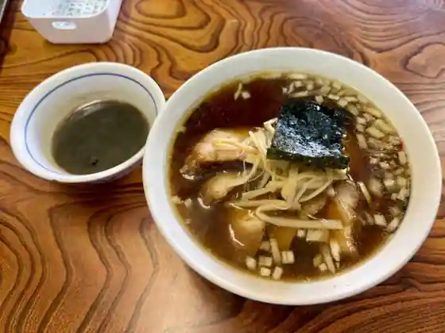
Ramen Tomo
田舎カフェ
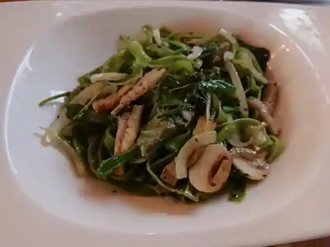
Inaka Cafe
森のカフェ・ベルカザーレ
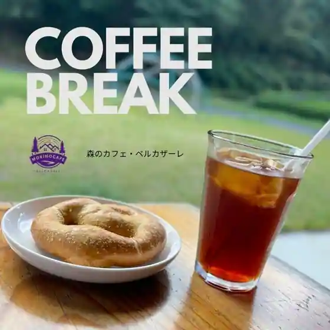
Mori No Cafe Berukazare
アジアンダイニング＆カフェバー SAPANA 袖ヶ浦駅前店
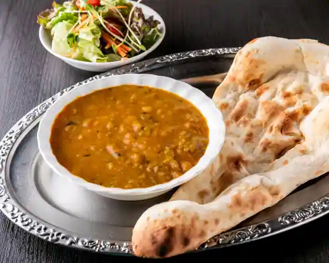
Ajian Dining & Cafe Bar SAPANA Sodegaura Ekimae
ラーメン うさぎや
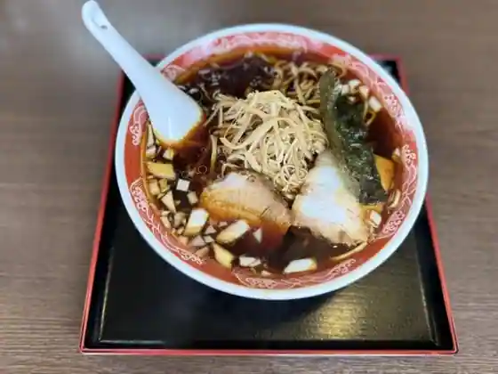
Ramen Usagiya
Sights
Tokyo Doitsu Village
Sodegaura Park
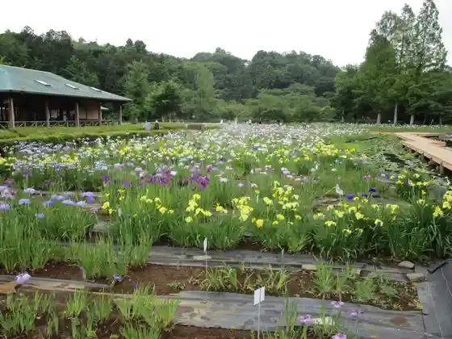
Guriin Farm Miki
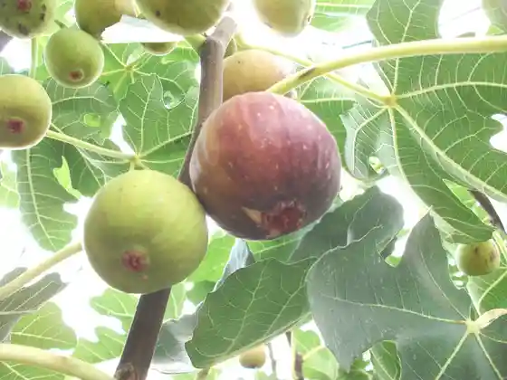
Sodegaura Kyodo Museum
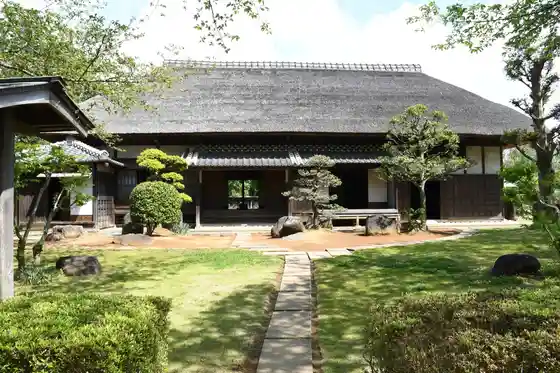
Kisetsu no Hana (Bara) / Tokyo Doitsu Village
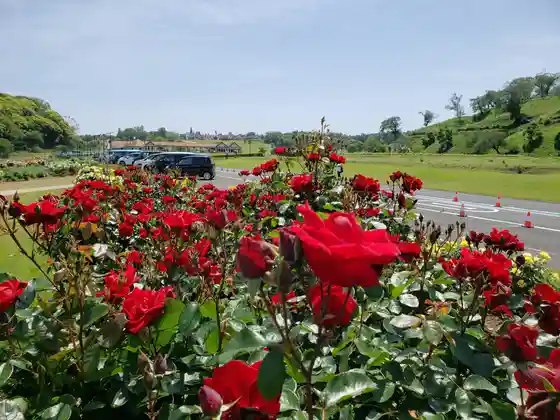
Sodegaura Nochikusan Mono Chokubai Tokoro (Yuri Village)
Hyaku Megi Park
tasso Forest
Tennen Onsen Yu Mai Oto Sodegaura Mise
Kasa Ue Kannon Sei Fuku Tera
Saito Garden
Hiraoka no Sato no Village Park
ICHIGOYA SUN
Hosono Farm